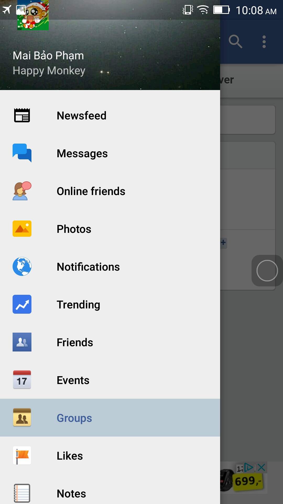
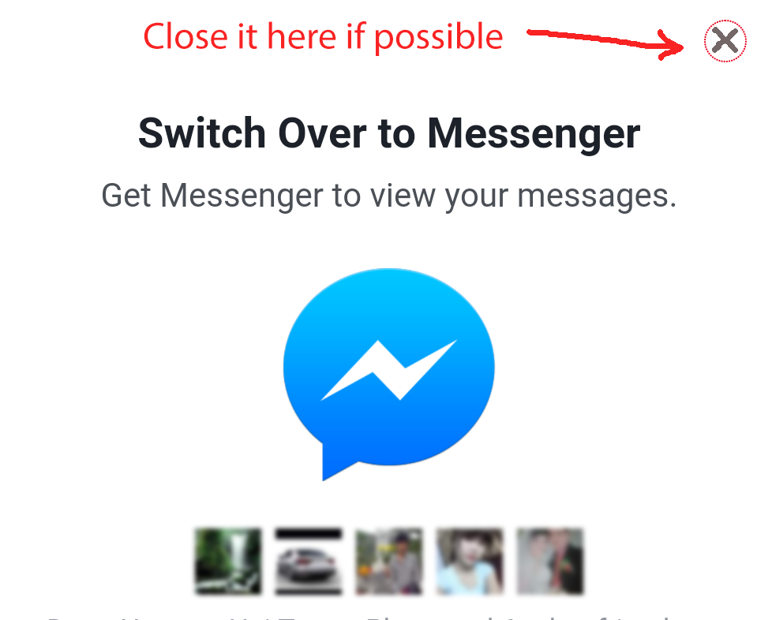
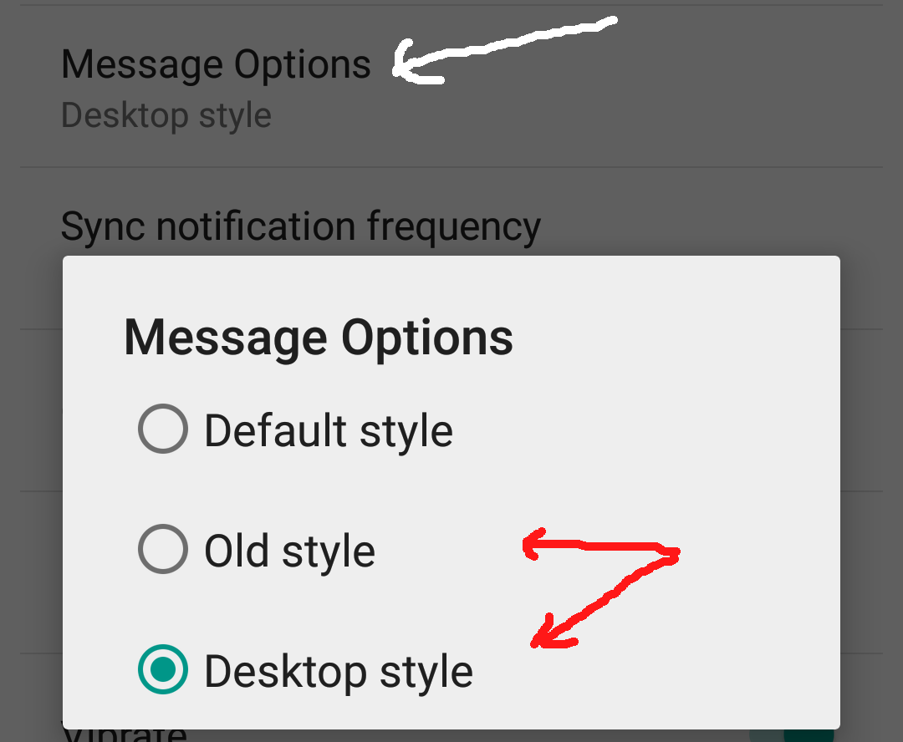

Lite Messenger for Facebook
Light-weight alternative for both Facebook and Messenger
Welcome to Lite Messenger for Facebook page
This is an alternative for Facebook Messenger on Android. As you may know, Facebook users has been forced to use separated Messenger app, however, it is widely known that Messenger on Android is extremely laggy, slow. The amount of battery and memory it consumes is also a big concern for many users, or even their phones do not have enough memory.
Our application takes only 12 MB to install. It is light-weight compared to more than 100 MB by official app.
Features
We try our best to provide not only Messenger but also all Facebook functions, to make sure users do not being annoyed by switching between apps all the time. The most important features are:
1. Message
2. Newsfeed
3. Comments, like, share
4. Online friends
5. Notification
6. View and download images
7. Search
Below are some screenshots



Message troubleshooting
Sometimes you may see a popup from Facebook. Probably you can close it. However, if not, we provide 2 solutions. Go to Settings, select Message options and choose Old style or Desktop style.
 Authors and Contributors
Developed by (@TommyVu( and (@CrazyMonkey)
Support or Contact
Contact myfullhouse.6789@gmail.com